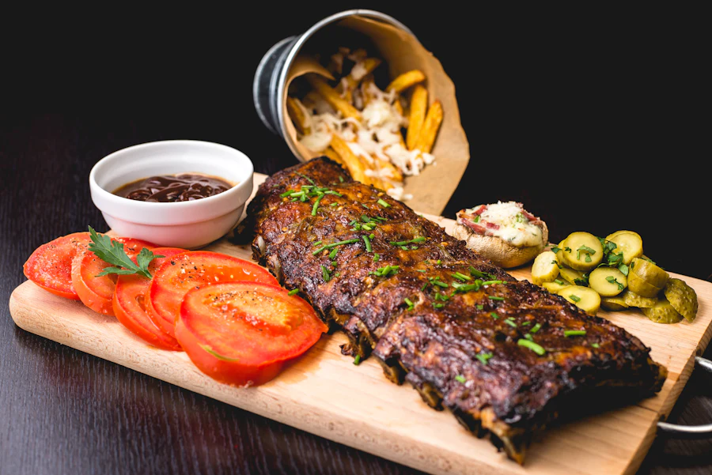
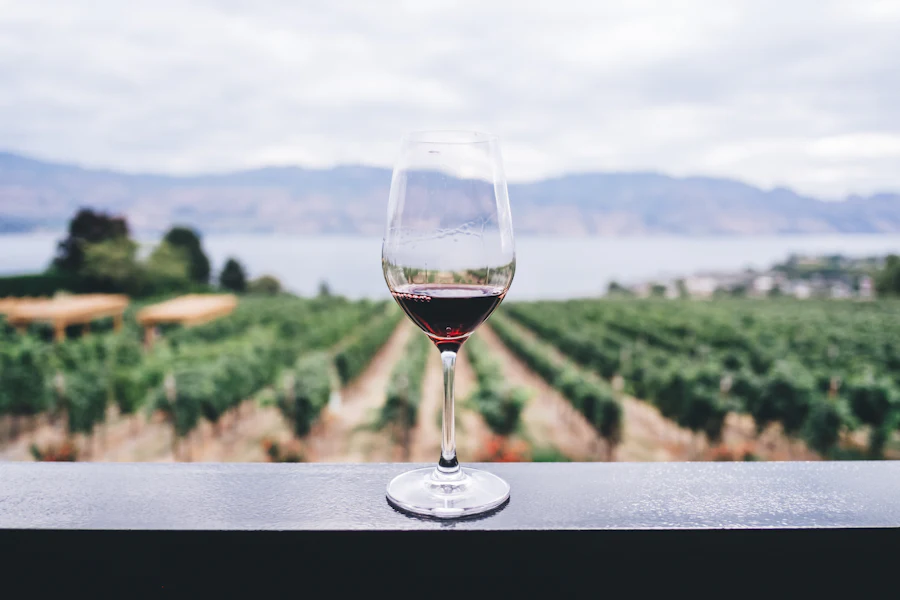

Un guachinche de toda la vida, en casa de la familia. Cocinamos lo que da la tierra y el corral, servimos el vino que hacemos nosotros mismos y te sentamos como si vinieras a comer donde tu abuela.


Como buen guachinche, abrimos por temporada mientras dure el vino. Llámanos antes de venir.